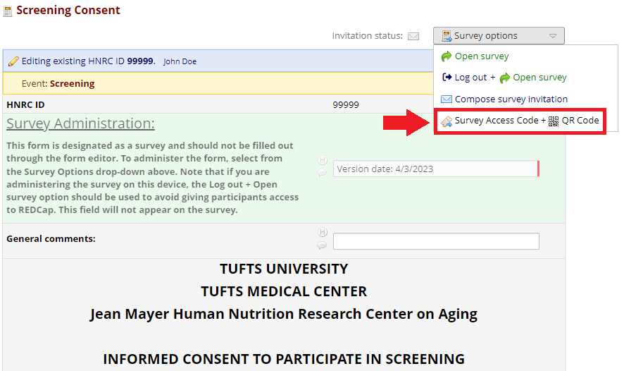
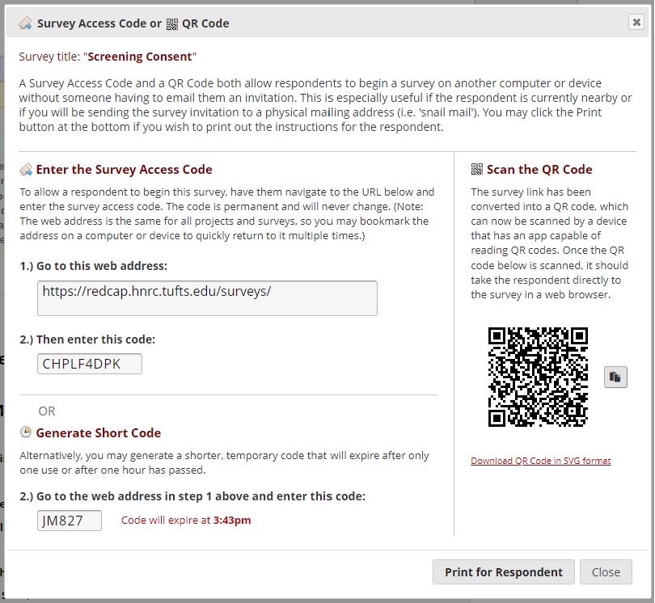
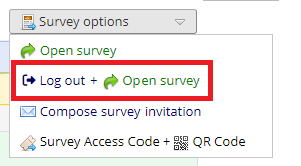
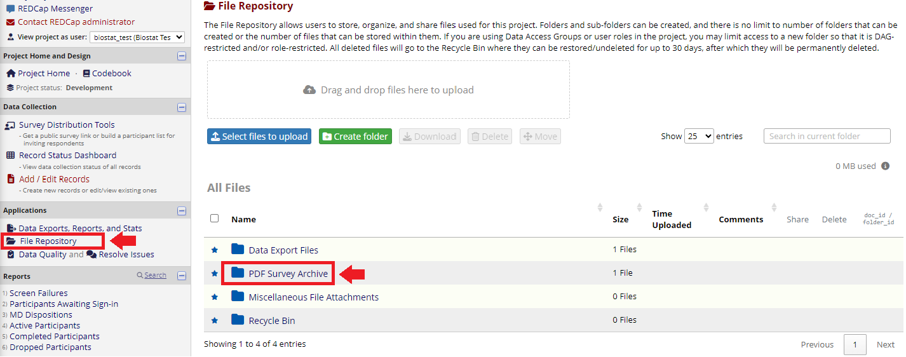
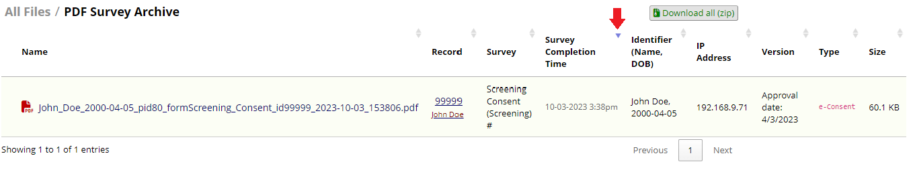

5 eConsenting
5.1 Accessing consents
5.1.1 Preferred method
For studies with eConsenting (required IRB approval), the consent forms will appear alongside other forms in the Record Status Dashboard and record Home Pages. To consent a subject, you’ll need to open the associated survey on an iPad. To do this, click into the consent form then from the Survey Options drop-down at the top select Survey Access Code + QR Code. This will display a pop-up with the URL to navigate to on the iPad (https://redcap.hnrc.tufts.edu/surveys/). There will also be a direct link to this page on the iPad, which will be an icon called ‘Redcap Surveys’. You’ll also see a code, which should be entered into the iPad once the survey link is opened. You may also click Generate Short Code at the bottom to create a temporary shorter code. Entering the code will take you directly to the associated survey. You do not need to login to Redcap or navigate to the associated record.
 
5.1.2 Fallback method
If you only have a single device with you when performing a consent (ie the iPad), the above method may not be feasible. As an alternative, you may access the consent by opening the Redcap link on the iPad, logging in, and navigating to the appropriate consent form as usual. However, rather than selecting Survey Access Code + QR Code from the Survey Options drop-down, you’ll want to select Log out + Open Survey. If using this method, it is critical that you log out prior to handing a participant the device. In addition, when logging in to Redcap on an iPad or other public device, your password should not be saved.

5.2 Consenting process
Once the consent survey is open on the iPad, follow all normal consenting procedures as described in the Record of Consent form. The Record of Consent form is a repeating form and a new copy should be filled out for each consent performed. After reviewing the consent with the participant, the survey will contain the appropriate date, time, and signature fields that must be filled out. For the date and time fields, the ‘Today’ or ‘Now’ button next to the field may be used to quickly fill in the current date or time. To add signatures, click the Add Signature link and sign in the displayed signature box. This is preferably done on an iPad or other touchscreen device. Once these items are filled in, click the Next Page >> button at the bottom of the form. Under no circumstances should the Save & Return Later option be used for consents.
The following page will show a preview of the signed consent document for the subject to review. After double checking the document, the subject will need to check the box stating that the information in the document is correct. After that they may press Submit. This will save the consent form information, add a PDF copy of the consent to the File Repository, and proceed to the next consent if applicable. To print a copy of the consent for the participant, navigate to the File Repository by clicking the link in the left-hand side bar of the project in the ‘Applications’ section. From there you will see a folder called ‘PDF Survey Archive’. After clicking into the folder you will see a list of all eConsent documents associated with the study. Select the desired document to download a copy of the PDF and print via the device’s PDF viewer. If you’re unable to locate the document you’re looking for, you can sort the list by record IDs or the survey completion times by clicking the arrows at the top of the columns.
 
5.3 Paper consenting
If for any reason eConsenting is not available or appropriate, you may default to a paper consent. To log a paper consent in Redcap, follow these steps:
- After completing the consent, scan the consent document to make a PDF copy.
- In the document name, include the subject’s name, HNRC ID, and the date and type of consent. It must be descriptive as files are not separated by subject.
- Navigate to the File Repository and click the ‘Paper Consents’ folder. If the folder does not exist, create a new one by clicking the
Create folderbutton. - Either drag the file into the drag and drop area at the top of the page, or click the
Select files to uploadbutton and navigate to the consent PDF. - Navigate to the subject’s associated consent form. Near the top of the form there will be a comment field. Enter a note indicating that the consent was filled out in paper and include your name and date.
- Scroll to the bottom of the consent form and mark the form status as ‘Complete’, then save the form.
- This constitutes source document transfer and thus you may now destroy the original document.